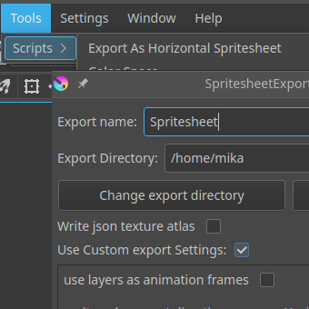

Krita SpritesheetExporter
Transformez vos animations Krita en spritesheets prêtes pour votre moteur de jeu, en un clic : bande horizontale, fond transparent, nom du document.

Transformez vos animations Krita en spritesheets prêtes pour le jeu, en un clic.
Ce plugin Python pour Krita exporte les images de votre timeline d'animation dans une seule spritesheet PNG, prête à être glissée dans votre moteur de jeu : Godot, Unity, Phaser, GameMaker, Pygame…
Il est pensé pour un workflow de développement de jeu rapide : par défaut, il exporte une bande horizontale, nommée d'après votre document Krita, avec un fond transparent. Pas de réglage, pas de renommage, pas de nettoyage. walk_cycle.kra donne directement walk_cycle.png.
Fonctionnalités
- Export en un clic de toute la timeline (calques visibles fusionnés) en spritesheet PNG
- Bande horizontale par défaut : une ligne, autant de colonnes que d'images
- Même nom que votre document et fond transparent conservé
- Détection automatique de la première et de la dernière image de l'animation
- Atlas de texture JSON (optionnel), compatible avec Phaser 3 et les outils qui lisent ce format
- Calques comme images (optionnel) : utilisez chaque calque comme une image de l'animation
- Mise en page personnalisée si besoin : lignes, colonnes, sens, plage d'images, pas
- Images individuelles (optionnel) : conservez aussi chaque sprite dans un fichier séparé
Installation
- Téléchargez le plugin depuis GitHub (bouton Code, puis Download ZIP)
- Dans Krita : Outils > Scripts > Importer un module externe Python depuis un fichier… et sélectionnez le zip
- Redémarrez Krita, puis activez Spritesheet Horizontal Exporter dans le gestionnaire de modules externes Python
- Redémarrez Krita une dernière fois
Le plugin est alors disponible dans Outils > Scripts > Export As Horizontal Spritesheet. Compatible Krita 4.2 et plus, y compris Krita 5.
Crédits
Fork du plugin original de Falano, avec les contributions de Snudl et EugenDueck. Publié sous licence MPL 2.0.